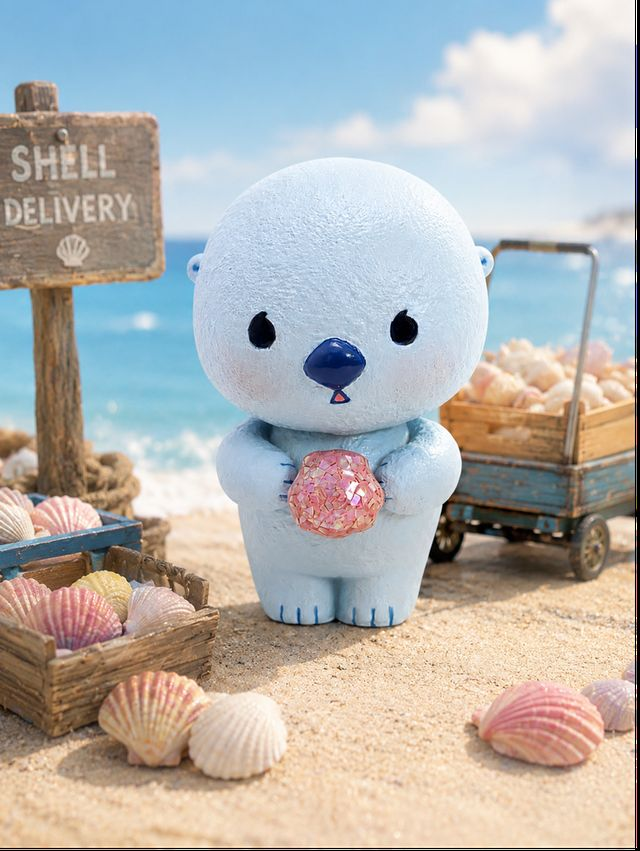
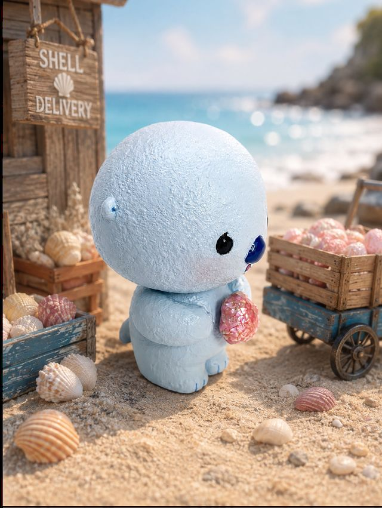
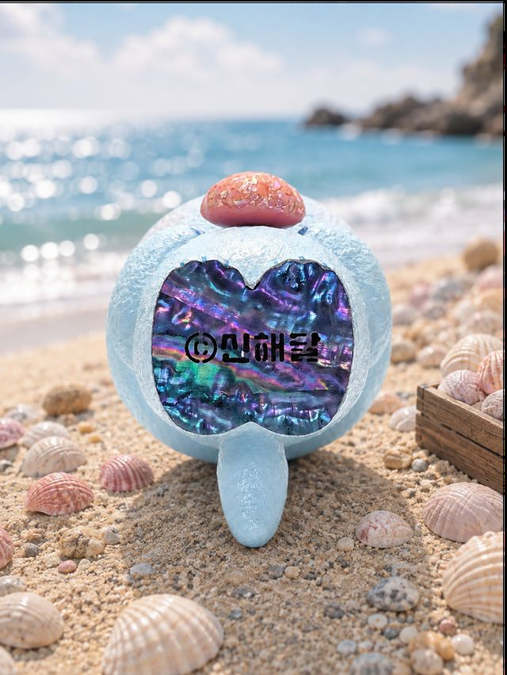
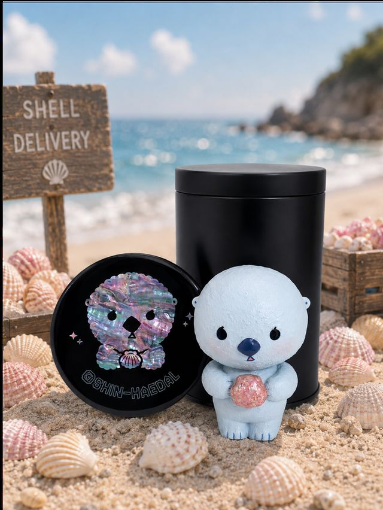
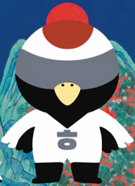
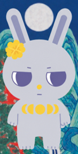
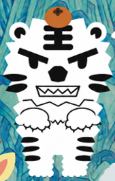
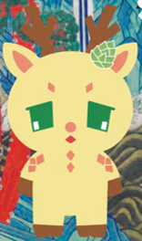
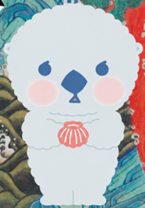

MEET SPACED-OUT SEA OTTER
수영 못 하는 해달,
조개배달부 얼빵해달
두 발로 걸어 조개를 배달해요. 조개껍데기 안에는 사랑과 응원, 위로 같은 작은 마음들이 담겨 있어요. 걸어서는 도무지 느려서, 요즘은 동네 스포츠센터 아침 수영반에 다니는 중이에요.
“Even sea otters have to learn to swim.”
이름의 비밀
얼빵해달은 이름 하나조차 소리가 아니라 성격과 의미를 옮긴 이름이에요.
얼빵 → SPACED-OUT
‘얼빵’을 소리 그대로 Eolbbang이라 쓰는 대신, 조금 얼빠져 있고 어딘가 엇박자지만 그래서 사랑스러운 느낌을 ‘Spaced-out’으로 옮겼어요. 이름 자체가 성격 소개가 되도록요.
해달 → SUN + MOON
‘해달’은 동물 해달이면서, 해(☀)와 달(☾)로도 읽혀요. 하나의 이름 안에 동물과 하늘, 두 겹의 의미가 함께 들어 있어요.
캐릭터 프로필
처음 만나는 분들을 위한 얼빵해달 기본 정보.
CHARACTER STATUS
- NAME
- 얼빵해달 (Spaced-out Sea Otter)
- SPECIES
- 해달
- JOB
- 조개배달부
- SIGNATURE
- 조개껍데기
- DELIVERS
- 사랑 · 응원 · 위로
- CREATED
- 2020
조개껍데기 — 세계를 잇는 물건
얼빵해달이 배달하는 조개는 캐릭터의 소품이면서, 신해달 작업 전체를 관통하는 재료이기도 해요.
“For the creator, a material. For someone else, a message.”
만드는 이에게는 재료, 받는 이에게는 마음.
2D에서 3D로
얼빵해달은 자개와 옻칠을 그대로 입힌 3D 콜렉터블 아트토이로도 만들어졌어요. 시그니처 조개는 자석으로 탈부착되는 부속으로 재현했어요.




- Material
- 자개 · 옻칠 · 친환경 패각 레진
- Feature
- 자석 탈부착 조개
- Year
- 2026
- Size
- 10 × 9 × 6 cm
일월오봉단Ilwolobongdan
얼빵해달은 혼자가 아니에요
일월오봉단(日月五峯團)은 조선 왕실 그림 ‘일월오봉도’에서 출발한 신해달의 오리지널 캐릭터 그룹이에요. 학, 토끼, 호랑이, 사슴 — 한국 전통 도상 속 동물들이 각자의 직업을 갖고 살아가요.
SUN

학두루미Crane Crane
경호원
Signature: ㅎ
MOON

정월토끼First-Moon Rabbit
변장한 공주
Signature: 달맞이꽃
MOUNTAIN

선한백호Gentle Tiger
산지기
Signature: 곶감
PINE

솔직사슴Blunt Deer
짐꾼
Signature: 솔방울
SEA

얼빵해달Spaced-out Sea Otter
조개배달부
Signature: 자개
다섯 캐릭터, 다섯 역할, 다섯 상징 — 하나의 세계.
Contact를 통해 라이선싱·콜라보 문의를 받고 있어요.